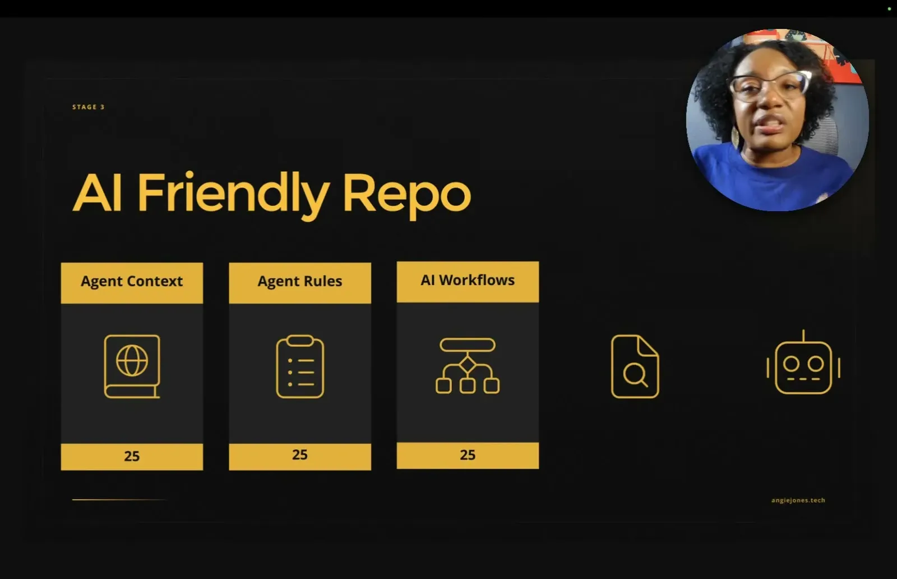
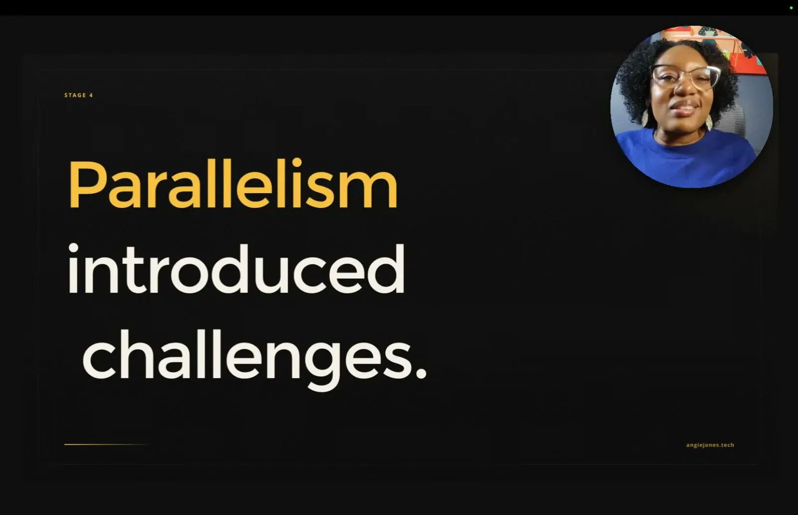
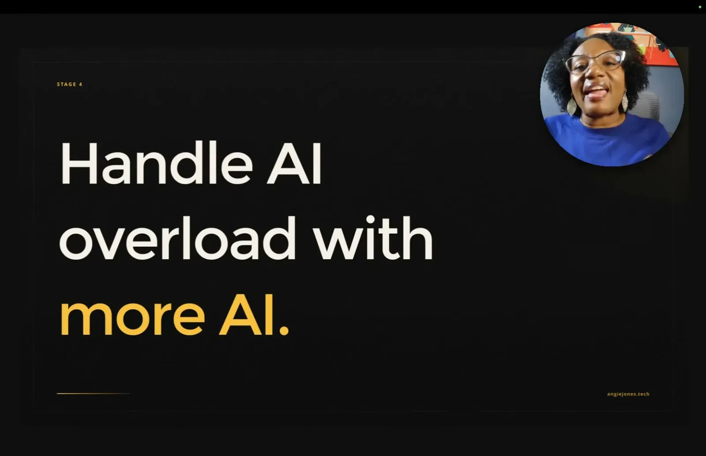
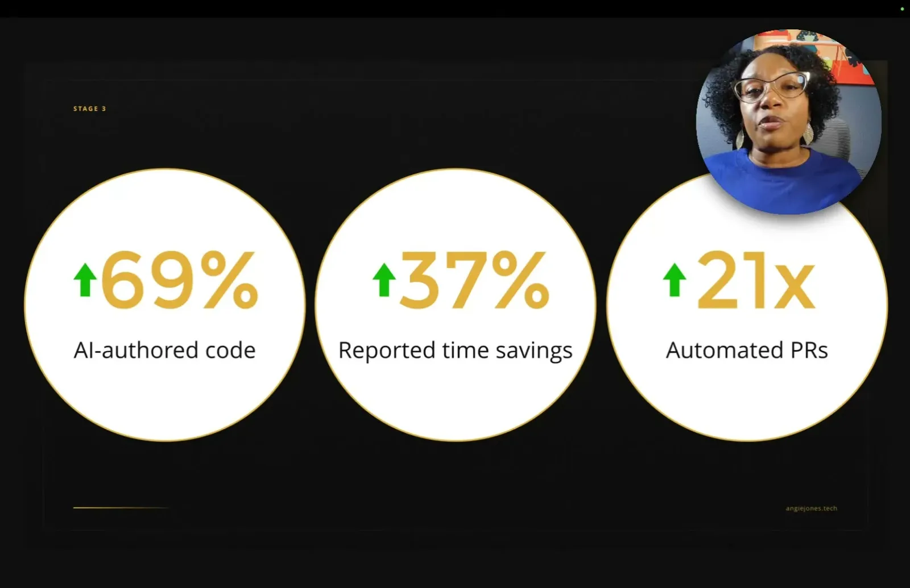

Building an Autonomous Engineering Org
Block moved through a five-stage engineer/agent maturity model plus a 50-person AI champions program, repo-readiness work, and a company-wide machine-readable world model over 25000 repos.
If you only read one thing
- 90% tool adoption didn't translate to faster shipping; the org needed a 5-stage maturity model (auto-complete through full delegation) and to focus on the 1% of power users rather than everyone at once.
- A 50-engineer AI champions program made repos AI-ready (context/rules files, slash commands, AI code review) and enabled delegation from Slack, Jira, and GitHub issues, driving 69% more AI-authored code, 37% more reported time savings, and 21x more automated PRs in 3 months.
- Reaching stage five (agents delegate and ship without hand-holding) required a company-wide machine-readable world model of the 25,000-repo codebase and isolated cloud workspaces for parallel agents, and preceded a round of layoffs.
This traces Block's own narrative from 90% adoption with no shipping gain, through the champions program's repo-readiness work, to the infrastructure that let stage five happen and the layoffs that followed; it does not claim the infrastructure caused the layoffs (ours).
Why this talk is a blueprint, not a take (ours)
Scope: Block's rollout of an autonomous engineering org across roughly 3,500 engineers: a staged maturity model, a hand-picked champions program that makes repos AI-ready, and infrastructure (cloud workspaces, orchestrator, world model) to reach full agent delegation.
A staged adoption path (six maturity stages, Unengaged to Autonomous) driven not by broad rollout but by a small champions group that standardizes AI-friendly repo components and multi-channel delegation, backed by isolated cloud workspaces, an in-house orchestrator (Builder Bot), and a machine-readable world model of the full codebase once parallel-agent scale requires it.
Prerequisites the talk implies:
- Repos already instrumented with agent context, rules, and workflow files before broad delegation is trusted
- A small group of engineers, not the whole org, willing to commit significant time (30%+) to enablement work
- Cloud infrastructure for isolated per-agent workspaces once local machines can't handle parallel agents
- A machine-readable map of the codebase's services and dependencies before agents can plan across repos
What the talk does not say:
- No cost figures for the cloud workspaces, Builder Bot build, or the champions program's opportunity cost
- No numbers on code review backlog or bug rates after the AI-authored code volume increased
- No detail on how layoffs were sized, timed, or connected, if at all, to the productivity gains, beyond the CEO's public framing
- No description of how Builder Bot resolves conflicts when multiple agents touch the same code
If you were to replicate one thing first: Before building any infrastructure, identify the roughly 1% of engineers who already tinker with agents and give them dedicated time to make their own repos AI-ready, rather than mandating tool adoption org-wide.
| Component | What it does (from the talk) | Evidence | Slide |
|---|---|---|---|
| AI maturity model (stage 0-5) | Measures an engineer's relationship with AI agents from Unengaged (stage 0) through Autonomous (stage 5, full delegation), adapted from Steve Yegge's Gastown article. | c4 · 03:06 | |
| 1/9/90 focus (AI champions) | Rather than leveling up all 3,500 engineers, targets the top ~1% (power users) as ~50 hand-picked champions across critical repos, each committing 30%+ time. | c6 · 05:40 | |
| AI-friendly repo components | Standard, team-customized components that make a repo AI-ready: agent context files, agent rules files, AI workflows (slash commands/skills), and AI code review. | 08:49 |  |
| Multi-channel delegation | Engineers, and later anyone in the company, delegate work to agents from Slack threads, Jira/Linear tickets, or GitHub issues; the agent returns a PR link. | 10:40 | |
| AI code review + auto-fix loop | Codex reviews all PRs; a second agent automatically fixes identified issues and commits them before a human reviews, to keep up with the PR volume increase. | 13:30 |  |
| Isolated cloud workspaces | Each parallel agent runs in its own isolated cloud environment after engineers' laptops ran out of memory and CPU running multiple agents locally. | 14:35 |  |
| Company world model | Machine-readable map of the entire 25,000-repo codebase and its dependencies, so orchestrators and agents can pull context and plan across multiple codebases. | c10 · 15:07 | |
| Measured impact (3 months) | 69% more AI-authored code, 37% more reported time savings, and 21x more automated PRs, which unlocked stage-four multi-agent parallelism. | c7 · 12:29 |  |
| Stage five (autonomous) | Anyone at the company, not just engineers, can invoke the agent via Slack to fix a bug or ship a feature without GitHub access. | c8 · 16:12 |


Adoption without impact
- Block built its own coding agent, Goose, before models supported tool calling, and worked with Anthropic as an MCP design partner.
- Within months 90% of engineers used Goose or Claude Code regularly, but the CEO was right that features weren't reaching customers any faster, prompting the speaker to frame AI enablement as three phases: experimentation, adoption, and impact.
“We were building Goose, our internal coding agent, even before the LLM supported tool calling. We worked with Anthropic as design partners for the initial release of MCP”
said at 00:00“about 90% of our engineers were now using tools like Goose and Claude Code regularly to generate code”
said at 00:32“Features certainly weren't making it to our customers any faster.”
said at 01:02A five-stage maturity model
- Reorganized with help from Steve Yegge's Gastown article, the model runs from stage zero (no AI use) through stage five, where engineers delegate complete tasks and agents produce shippable results without human hand-holding.
- By mid-2025 most engineers sat at stages one to two (chatting with agents, not yet producing PRs).
“Steve Yegge's Gastown article helped me reorganize it into a better model. So, stage zero is where the engineer doesn't use AI tools in their workflow at all.”
said at 03:06“stage five is that final boss where engineers are delegating complete tasks to agents and the agent is able to produce shippable results without the human necessarily”
said at 03:37Focusing on the 1%: the AI champions program
- Rather than trying to level up all 3,500 engineers, the speaker hand-picked about 50 champions from critical repos across the company (Square, Cash App, Afterpay, Tidal) who committed at least 30% of their time to AI enablement, with the goal of making repos AI-ready so gains would compound beyond just the champions.
“I started an AI champions program where I handpicked about 50 engineers across the company who could pioneer what a genetic engineering looks like for their team”
said at 05:40Measured impact and reaching full delegation
- Three months after launch, AI-authored code was up 69%, reported time savings up 37%, and automated PRs up 21x, which enabled the move to stage-four multi-agent parallelism.
- Reaching stage five required a machine-readable world model of the 25,000-repo codebase so orchestrators and agents could pull context, and it extended delegation beyond engineers to anyone in the company via Slack.
“AI-authored code was up by 69% reported time savings increased 37%, and automated PRs increased 21 times.”
said at 12:29“Anyone at the company could act Build-A-Bot in Slack and have it fix a bug or implement a new feature. They didn't even need GitHub.”
said at 16:12“we built a company world modeled based on the entirety of our 25,000 repo code base, right? And this was a machine-readable view of every single service and how they all connect.”
said at 15:07The unresolved question
- The talk closes on the successfully built autonomous engineering org being followed by layoffs, with the speaker openly questioning whether enabling that level of productivity was ultimately good for the people who built it.
“Until it became a nightmare. You know, of course, all layoffs are tough, but this one felt different.”
said at 16:43Commentary (ours)
The 69%/37%/21x figures measure AI-authored code and PR volume, not customer-facing shipping speed -- the same metric gap the CEO originally flagged -- so it's worth asking whether stage five actually closed that original gap or just moved it (ours).
Underlying detail — every claim, typed and timestamped (10)
| Stance | Claim | t |
|---|---|---|
| asserts | Block built its internal coding agent Goose before LLMs supported tool calling, and worked with Anthropic as a design partner on the initial MCP release. | 00:00 |
| asserts | About 90% of Block's engineers were using tools like Goose and Claude Code regularly to generate code within a couple months. | 00:32 |
| warns | Despite high tool adoption, features weren't reaching customers any faster. | 01:02 |
| asserts | The engineer/agent maturity model, from stage zero (no AI use) onward, was reorganized with help from Steve Yegge's Gastown article. | 03:06 |
| asserts | Stage five is when engineers delegate complete tasks to agents and the agent produces shippable results without the human necessarily guiding it. | 03:37 |
| recommends | Focus enablement effort on roughly the top 1%, a hand-picked group of about 50 champions across critical repos, rather than trying to level up everyone at once. | 05:40 |
| asserts | Three months after the champions program launched, AI-authored code was up 69%, reported time savings up 37%, and automated PRs up 21x. | 12:29 |
| asserts | At stage five, anyone at the company, not just engineers, could invoke Build-A-Bot in Slack to fix a bug or implement a feature without needing GitHub access. | 16:12 |
| warns | Building the autonomous engineering org was followed by a round of layoffs that the speaker questions the role of her work in causing. | 16:43 |
| asserts | Block built a machine-readable world model of its entire 25,000-repo codebase mapping every service and its dependencies, so orchestrators and agents could pull context and plan across multiple codebases. | 15:07 |
Machine-readable copy embedded in this page (script#ontology) and in the corpus ontology.